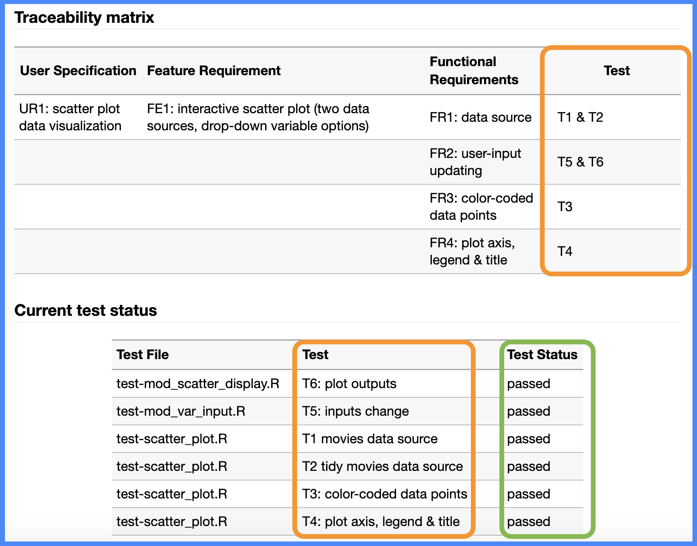

tests
└── testthat/
├── test-mod_scatter_display.R
├── test-mod_var_input.R
└── test-scatter_plot.RSystem tests
This chapter covers setting up system tests with shinytest2 and testthat, and what should be included in system tests.
Test files
Up to this point, I’ve been storing the tests in test files named for each function:
This is the recommendations in R Packages, 2ed, and gives us the ability to programmatically compare test results with the traceability matrix. For example, we can add the following code to the test-specs vignette and capture our test results in a tibble display:
pkg_tests <- testthat::test_local("../",
reporter = testthat::SilentReporter$new()) |>
tibble::as_tibble() |>
tidyr::pivot_longer(cols = c(passed, skipped,
warning, error, failed),
names_to = 'status',
values_to = "value") |>
dplyr::filter(value > 0) |>
dplyr::select(
`Test File` = file,
Test = test,
`Test Status` = status)
testthat::test_local() outputPlacing the test number in each call to testthat::it() will make it easier to link the tests back to the original functional requirements, features and specifications.
System tests
“Failure to allow enough time for system test, in particular, is peculiarly disastrous. Since the delay comes at the end of the schedule, no one is aware of schedule trouble until almost the delivery date. Bad news, late and without warning, is unsettling to customers and to managers.”
System (or end-to-end) tests simulate real user interactions in a ‘pre-production’ environment to verify the whole application (or system) works.1 Approaches to system testing vary, but in general, we’ll want to run system tests before a release, which means all of the app’s functional requirements are tested and released in lockstep.
shinytest2
shinytest2 requires a few steps to get up and running, most notably the chromote package.2
After installing the shinytest2 dependencies, you’ll want to verify you can create a new session with:
library(chromote)
b <- ChromoteSession$new()
b$view()
Chromote sessionshinytest2::use_shinytest2()! Runner already found: tests/testthat.R
✔ Adding 'shinytest2::load_app_env()' to 'tests/testthat/setup-shinytest2.R'✔ Adding '*_.new.png' to '.gitignore'✔ Adding '_\\.new\\.png$' to '.Rbuildignore'✔ Setting active project to '/path/to/moviesApp'✔ Adding 'shinytest2' to Suggests field in DESCRIPTION• In your package code, use `rlang::is_installed("shinytest2")` or
`rlang::check_installed("shinytest2")` to test if shinytest2 is installed
• Then directly refer to functions with `shinytest2::fun()`✔ Setting active project to '<no active project>'Recap
Behavior-driven development (or behavior-driven testing) fills the void between non-technical stakeholders and developers by encouraging natural, descriptive language (often complete sentences) to define and communicate the application requirements.
The goal of any shiny application should be to create something that helps drive data-driven decisions. I’ve found building a traceability matrix and using testthat to scope tests forces me ask myself, “do the tests address all of the user’s needs?” (which saves me from developing a feature no one asked for).
Recap: testing your app-package
Testing shiny app-packages
Scoping tests: … user specifications, features, and functional requierments.
User specifications:
Features:
Functional requierments:
Unit tests: set up the unit testing infrastructure with
usethis::use_testthat()Test files: create new test files with
usethis::use_test()BDD functions: use
describe()add context for feature or specifications andit()blocks for test code.
Fixtures:
Helpers:
Mocks:
Module tests:
testServer()…System tests:
shinytest2…
System tests should strive to replicate the production conditions, even when/if it’s not possible to perfectly replicate the environment.↩︎
A great place to start is the Getting Started vignette.↩︎